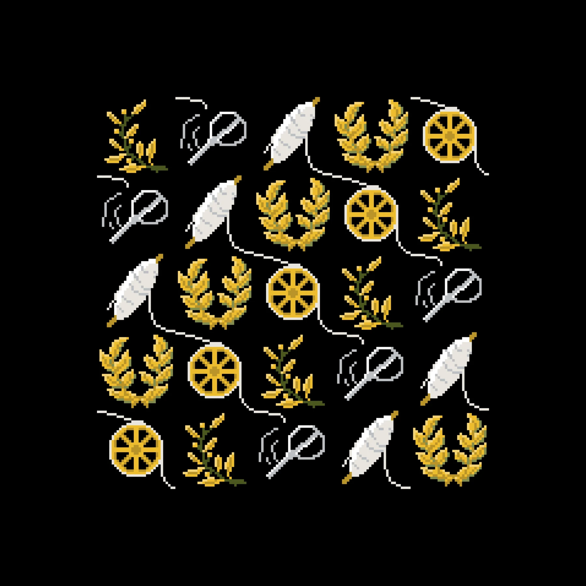
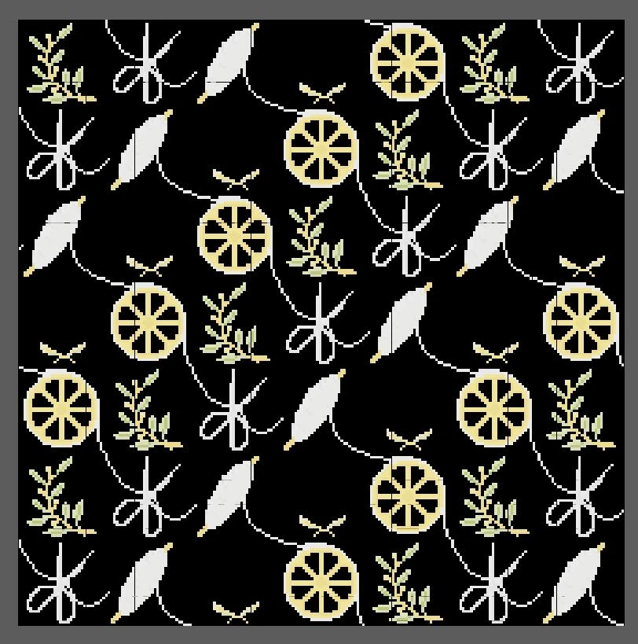
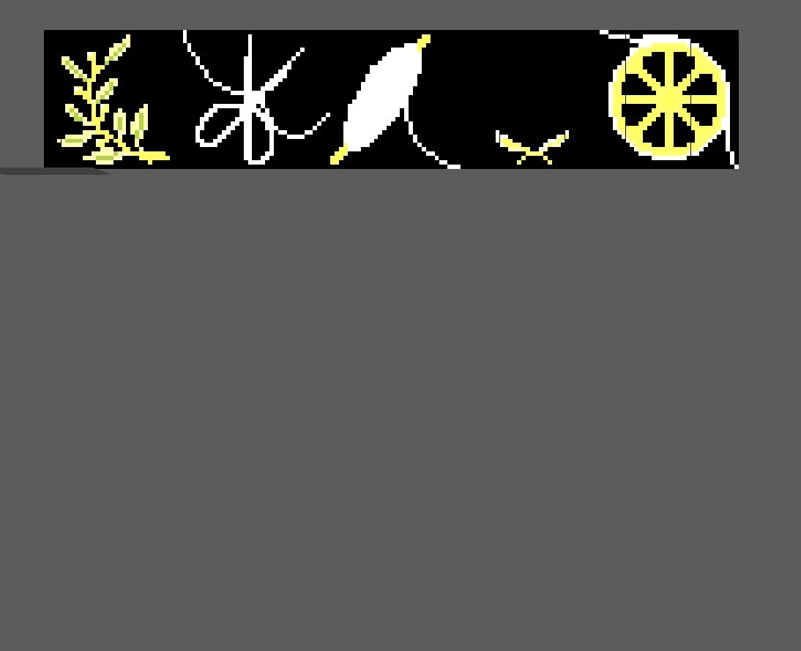

Case Study · February 2026
Woven Motion
A pipeline that parses external pixel-art data and reconstructs it as a scalable, animated three-dimensional quilt.
RoleData-Driven Animation
ToolsPython · Maya
DateFebruary 2026
Parsing external pixel data
Each .c file is parsed for frame count, width, height, and hexadecimal pixel values. Data is grouped by tile and organized into frame-based dictionaries.

Shared materials across animation
Hex colors are normalized to RGB and deduplicated into one shared palette per tile, allowing shaders to be reused across all frames.
From pixels to animated geometry
The script builds geometry for each frame and uses visibility animation to reconstruct the source pixel art. Rows and columns expose the overall quilt layout.

Reliable frame generation
An early return inside the construction loop stopped generation after one row. Moving the return outside the loop restored the full tile and clarified the pipeline's control flow.
